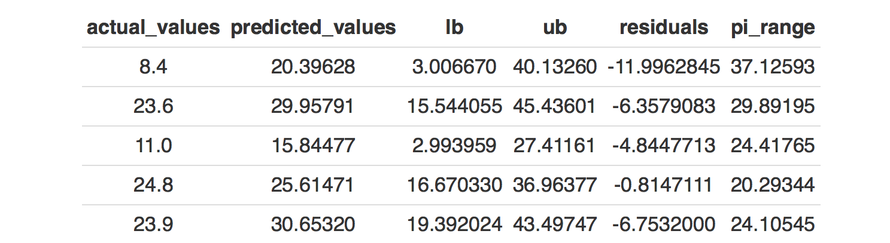
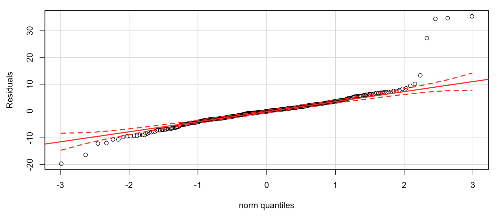
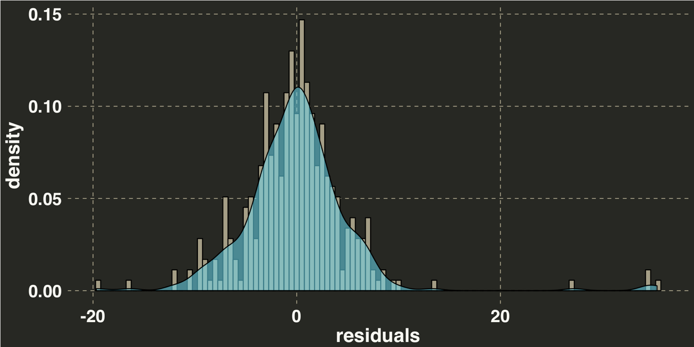
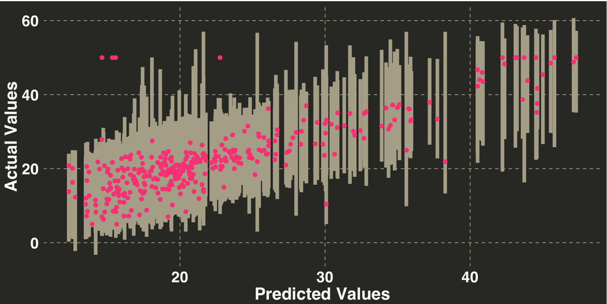
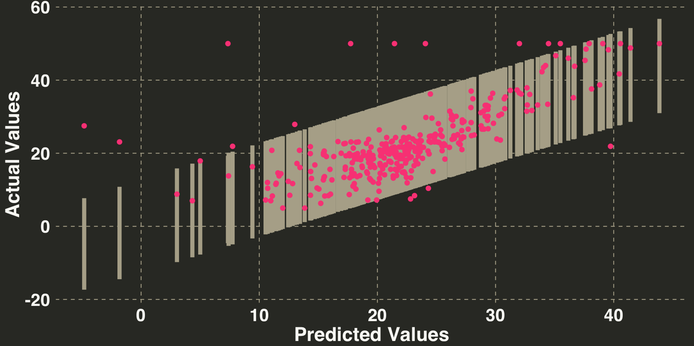
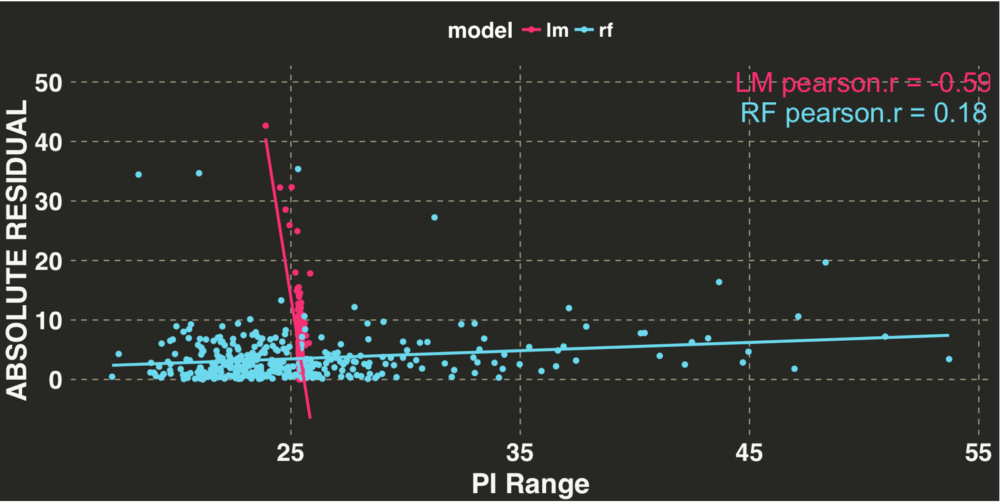
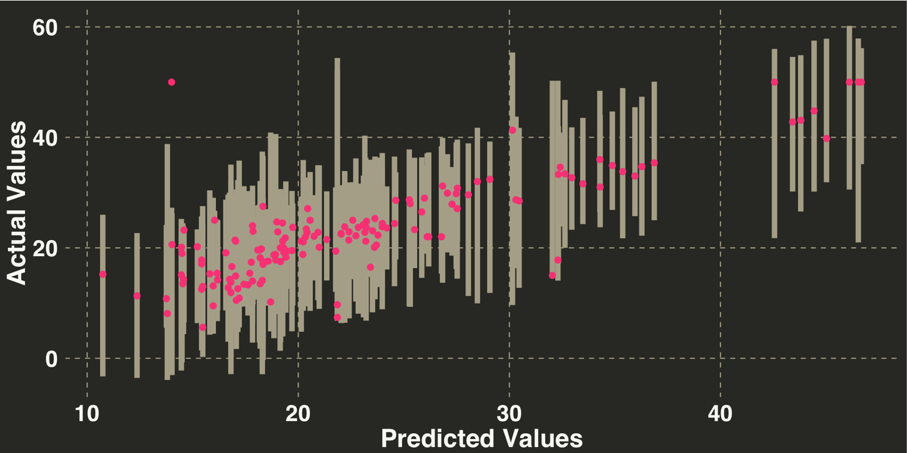

Random Forest Prediction Intervals
Take a stroll through the random forest to learn how to quantify uncertainty in your predictions with one of the more popular applied machine learning algorithms.

Overview
We are often only interested in “How much” or “How Many” when it comes to making a prediction. Yet there is an equally important component that is often overlooked, namely “How Certain” or “How Confident”. This is where confidence intervals (CIs) and prediction intervals (PIs) enter into the equation. I’ll first cover the difference between CIs and PIs and then we’ll do some implementation to see how we can capture uncertainty surrounding our predictions with a Random Forest.
Confidence And Prediction Intervals
These two terms are often used interchangably but they are quite different. Let’s say we want to estimate Salary as a function of years of education via linear regression. Confidence intervals capture uncertainty around a parameter estimate (e.g., the average increase in salary for each additional year of education). If we were to repeatedly take samples of people, measure their salary and years of education, and calculate a different regression equation for each sample, then 95% of the confidence intervals generated from each regression should contain the true parameter.
Prediction intervals take uncertainty of parameter estimates into account as well but also consider the uncertainty around trying to predict the value of an unseen, single observation (variability of individual observations around the parameter). This is why prediction intervals are always wider than confidence intervals – because we have to consider more sources of uncertainty.
With these differences in mind, let’s see how prediction intervals are used in practice. We are going to predict neighborhood median housing values based on 2 inputs: average number of rooms per house and property taxes. We’ll do a 70-30 split to create our training and test datasets, respectively. On our training data, we’ll implement leave-one-out cross validation to get an idea of how well our prediction interval methodology will perform on new, unseen data. If we set a 95% prediction interval, then ideally 95% of the values should fall within their interval during validation. Let’s load the data.
libs = c('randomForest', 'dplyr', 'data.table', 'knitr', 'ggplot2', 'artyfarty', 'car', 'forcats', 'lazyeval', 'broom')
lapply(libs, require, character.only = TRUE)
df <- data.table::fread("https://archive.ics.uci.edu/ml/machine-learning-databases/housing/housing.data",
data.table = FALSE)
names(df) <- c('CRIM', 'ZN', 'INDUS',
'CHAS', 'NOX', 'RM', 'AGE',
'DIS', 'RAD', 'TAX', 'PTRATIO',
'B', 'LSTAT', 'MEDV')
dv = 'MEDV'
iv = c('RM', 'TAX')
df_input = df %>%
dplyr::select_(.dots = c(iv, dv))
Let’s check out the first 5 rows.
Great success! Ok now let’s specify our Random Forest model. We don’t hardcode any of the values here because we might later want to add in new predictors and don’t want to change our model specification every time. So we’ll generate a generic input formula like this.
model_spec = as.formula(paste0(dv, " ~ ",
paste0(setdiff(names(df_input), dv),
collapse = " + ")))
Let’s create our training and testing datasets. Additionally, we’ll add a variable random_pred_index to identify which observation we want to hold out during cross validation.
set.seed(123)
pct_train = 0.70
train_indices = sample.int(n = nrow(df_input),
size = floor(pct_train * nrow(df_input)),
replace = FALSE)
train_df = df_input[train_indices,]
test_df = df_input[-train_indices,]
random_pred_index = sample(1:nrow(train_df), nrow(train_df), replace = FALSE)
Random Forest Prediction Intervals
The number of trees is set to 10 for illustration purposes. We’ll also go through the loop once to illustrate what’s actually going on.
ntrees = 10
for(i in random_pred_index){
print(paste0("HOLDING OUT OBSERVATION NUMBER: ", i))
temp_train_df = train_df[-i,]
temp_validation = train_df[i,]
temp_rf_fit = randomForest(model_spec,
data = temp_train_df,
ntree = ntrees)
temp_rf_pred = predict(temp_rf_fit, temp_validation, predict.all = TRUE)
break
}
Let’s examine the predicted values for this observation.
print(temp_rf_pred$individual)
## [,1] [,2] [,3] [,4] [,5] [,6] [,7] [,8] [,9] [,10]
## 81 28 24.5 28.5 25 28.25 24.12 24.475 25 28.03333 25
The above values represent the final prediction from each tree. Since random forest uses bagging (i.e., it takes a random sample of our data each time it builds a tree), each of the predictions will differ from one another. These estimates will serve as the first part of our prediction interval.
The second part captures the prediction accuracy of each of our trees, which is referred to as Out-of-bag estimate. Remember how I mentioned that random forest takes a random sample of our data each time it builds a tree? The data that isn’t sampled is used to test how well an individual tree captured the signal in our data and produced an accurate prediction on the non-sampled data. Let’s see how well each of our trees performed by examining their mean-square error.
print(round(temp_rf_fit$mse, 1))
## [1] 51.6 48.9 46.3 49.2 46.0 39.5 39.9 38.3 37.5 36.3
We see that tree number 10 (36.3) had the lowest out-of-bag MSE while tree number 1 (51.6) had the highest MSE. The accuracy information will serve as the second part.
Now that we have both pieces of information, let’s calculate a prediction interval for this observation. For the sake of simplicity we’ll assume that our observations are distributed normally about the mean – an assumption we will test a little bit later. Each of the 10 predictions above will serve as the mean, and the square-root of our mean-squared error will serve as our standard deviation. We will then take 10 samples from a distribution with these parameters, add them to the predictions from each tree, and then sort the updated values form lowest to highest. The values that fall at the 2.5th percentile and 97.5th percentile will serve as the lower and upper bounds for our prediction interval.
lower_bound = 0.025
upper_bound = 0.975
prediction_interval_values = temp_rf_pred$individual + rnorm(ntrees, 0, sqrt(temp_rf_fit$mse))
lower_upper_bound_values = quantile(prediction_interval_values, c(lower_bound, upper_bound))
print(lower_upper_bound_values)
## 2.5% 97.5%
## 15.48663 37.67624
That’s it. Next we will re-run the above code with all of the training cases, and then we’ll investigate 2 things:
- Whether our assumption of normality is justified.
- The percentage of observations that fall within our interval (i.e., Coverage Rate)
ntrees = 100
predicted_values = c()
actual_values = c()
lower_bound_values = c()
upper_bound_values = c()
lower_bound = 0.025
upper_bound = 0.975
pct_train = 0.70
#
model_spec = as.formula(paste0(dv, " ~ ", paste0(setdiff(names(df_input), dv), collapse = " + ")))
train_indices = sample.int(n = nrow(df_input), size = floor(pct_train * nrow(df_input)), replace = FALSE)
train_df = df_input[train_indices,]
test_df = df_input[-train_indices,]
random_pred_index = sample(1:nrow(train_df), nrow(train_df), replace = FALSE)
for(i in random_pred_index){
print(paste0("HOLDING OUT OBSERVATION NUMBER: ", i))
temp_train_df = train_df[-i,]
temp_validation = train_df[i,]
temp_rf_fit = randomForest(model_spec,
data = temp_train_df,
ntree = ntrees)
temp_rf_pred = predict(temp_rf_fit, temp_validation, predict.all = TRUE)
predicted_values = c(predicted_values, unname(temp_rf_pred$aggregate))
actual_values = c(actual_values, temp_validation$MEDV)
prediction_interval_values = temp_rf_pred$individual + rnorm(ntrees, 0, sqrt(temp_rf_fit$mse))
lower_upper_bound_values = unname(quantile(prediction_interval_values, c(lower_bound, upper_bound)))
lower_bound_values = c(lower_bound_values, lower_upper_bound_values[1])
upper_bound_values = c(upper_bound_values, lower_upper_bound_values[2])
}
validation_df = data.frame(actual_values = actual_values,
predicted_values = predicted_values,
lb = lower_bound_values,
ub = upper_bound_values) %>%
dplyr::mutate(residuals = actual_values - predicted_values,
pi_range = ub - lb)
Here are the first 5 rows of validation dataset.

First we’ll examine our residuals to determine if our assumption of normality for the prediction intervals is justified.
qqPlot(validation_df$residuals, ylab = "Residuals")

Overall the residuals appear to be normally be distributed but there are few big misses at the tails. Let’s run a more formal test.
shapiro.test(validation_df$residuals)
##
## Shapiro-Wilk normality test
##
## data: validation_df$residuals
## W = 0.82478, p-value < 2.2e-16
The output of this test, specifically our p-value, indicates that there is a very small chance that our residuals come from a normal distribution. Let’s look at the data from another angle.
ggplot(validation_df, aes(x = residuals)) + geom_histogram(aes(y=..density..),
binwidth=.5,
colour="black", fill= monokai_line_color) +
theme_monokai_full() +
my_plot_theme() +
geom_density(alpha=.5, fill=monokai_values[2])

That looks pretty normal. There are four observations that we drastically underpredicted. Normally we would go back and try to include another variable to potentially improve our predictive accuracy. However, the residuals appear to roughly follow a normal distribution.
While it is easy to get caught up in formal tests, at the end of the day what we really care about is the performance. Indeed, the question we should ask is whether the departure from normality will impact our coverage rate. In this case: Do around 95% of the actuals fall within our prediction intervals?
ggplot(validation_df, aes(x = predicted_values, y = actual_values)) +
theme_monokai_full() +
my_plot_theme() +
geom_errorbar(aes(ymin = lb, ymax = ub), color = monokai_line_color[1], size = 2) +
geom_point(size = 2, color = monokai_values[1]) +
ylab("Actual Values") + xlab("Predicted Values")

percent_of_values_in_pi = round(nrow(validation_df %>%
dplyr::filter(actual_values > lb &
actual_values < ub))/nrow(validation_df) * 100)
print(paste0("PERCENT OF VALUES IN PI: ", percent_of_values_in_pi, "%"))
## [1] "PERCENT OF VALUES IN PI: 98%"
print(paste0("VALIDATION MEAN ABSOLUTE ERROR: ", round(mean(abs(validation_df$residuals)), 1)))
## [1] "VALIDATION MEAN ABSOLUTE ERROR: 3.5"
print(paste0("AVERAGE PI WIDTH: ", round(mean(validation_df$ub - validation_df$lb), 1)))
## [1] "AVERAGE PI WIDTH: 25.3"
98% of the values fell within the prediction intervals, which is close to our 95% goal. So while the residuals violated the assumption of normality, it doesn’t appear to affect our coverage rate. Our MAE was 3.5, and the average width across all of our prediction intervals was 25.3.
As with most things in life, we need a reference point (to compare our performance metrics above). Let’s keep it simple and start with the good ol` linear model and re-run the validation part. We’ll also regenerate the prediction intervals and have a look at how they differ between the two models.
validation_df_lm = data.frame(NULL)
for(i in random_pred_index){
print(paste0("HOLDING OUT OBSERVATION NUMBER: ", i))
temp_train_df = train_df[-i,]
temp_validation = train_df[i,]
temp_lm_fit = lm(model_spec, data = temp_train_df)
validation_df_lm = data.frame(predict(temp_lm_fit, temp_validation, interval = "prediction")) %>%
dplyr::rename(predicted_values = fit,
lb = lwr,
ub = upr) %>%
dplyr::mutate(actual_values = temp_validation$MEDV) %>%
dplyr::mutate(residuals = actual_values - predicted_values) %>%
dplyr::bind_rows(validation_df_lm)
}
ggplot(validation_df_lm, aes(x = predicted_values, y = actual_values)) +
theme_monokai_full() +
my_plot_theme() +
geom_errorbar(aes(ymin = lb, ymax = ub), color = monokai_line_color[1], size = 2) +
geom_point(size = 2, color = monokai_values[1]) +
ylab("Actual Values") + xlab("Predicted Values")

percent_of_values_in_pi = round(nrow(validation_df_lm %>%
dplyr::filter(actual_values > lb &
actual_values < ub))/nrow(validation_df_lm) * 100)
print(paste0("PERCENT OF VALUES IN PI: ", percent_of_values_in_pi, "%"))
## [1] "PERCENT OF VALUES IN PI: 95%"
print(paste0("VALIDATION MEAN ABSOLUTE ERROR: ", round(mean(abs(validation_df_lm$residuals)), 1)))
## [1] "VALIDATION MEAN ABSOLUTE ERROR: 4.2"
print(paste0("AVERAGE PI WIDTH: ", round(mean(validation_df_lm$ub - validation_df_lm$lb), 1)))
## [1] "AVERAGE PI WIDTH: 25.4"
The prediction interval coverage rate of 95%. This is the coverage rate we expected but it less than our random forest model (98%). Is this because our random forest model just produced super wide intervals that aren’t helpful (e.g., the price of this home will be somewhere between $100K and $20Million)? Let’s compare the average width of all the prediction intervals between the two models to get some insight on this question. The average width for the linear model is 25.4, while the random forest average PI width is 25.3. This indicates that the random forest model is slightly better at capturing the uncertainty when predicting a new, unseen observation, given that both models are generating prediction intervals of equal width. Finally, the MAE is lower for random forest relative to the linear model on the validation set (3.5 vs. 4.2), so it looks like there is some non-linearity in the data that the linear model just can’t capture.
Besides being the more accurate model and generating slightly better prediction intervals (at least in this case), there is one other feature that I really like about random forest prediction intervals. I’ll go over this in the next section.
Quantifying Risk
Ideally we want our prediction intervals to tell us two things:
- Whats the range of potential outcomes?
- How confident am I in my prediction?
Thus far we’ve focused mainly on point #1. But point #2 is also very important. When comparing the PIs of two methods we’ve reviewed thus far, you’ll notice the PIs for the linear model were relatively constant across our range of predicted values. In contrast, the PIs for the random forest were changing from one observation to the next, such that some intervals were much wider than others. So how do both methods account for the fact that some things are just harder to predict than others? The linear model does it by examing how far the value of xij is from the average of xi. Values that are closer to average of xi will have narrower prediction intervals; values that are further away from average of xi will have wider prediction intervals. This makes intuitive sense: We can be more certain about our predictions when the input values are closer to the center. However, if you examine the linear model PI plot above, you’ll see that this doesn’t make much of a difference in terms the width of our prediction intervals.
If we take the width of the interval as a measure of our confidence, then there should be a significant positive correlation between PI width and our residuals. Wider intervals should correspond to bigger errors, while narrow intervals should have smaller errors. Let’s compare the relationships between the PI intervals and residuals for the two models outlined thus far and calculate a correlation coefficient for each.
lm_pi_range = validation_df_lm$ub - validation_df_lm$lb
lm_residual = abs(validation_df_lm$residuals)
rf_pi_range = validation_df$ub - validation_df$lb
rf_residual = abs(validation_df$residuals)
pi_range_df = data.frame(model = c(rep("lm", length(lm_pi_range)), rep("rf", length(rf_pi_range))),
pi_range = c(lm_pi_range, rf_pi_range),
residuals = c(lm_residual, rf_residual))
cor_by_model = pi_range_df %>%
dplyr::group_by(model) %>%
dplyr::do(tidy(cor.test(.$residuals, .$pi_range))) %>%
dplyr::select(model, estimate, p.value) %>%
dplyr::mutate(estimate = round(estimate, 2),
p.value = round(p.value, 2))
data.frame()
pi_range_df = pi_range_df %>%
dplyr::inner_join(cor_by_model)
ggplot(pi_range_df, aes(x = pi_range, y = abs(residuals), color = model)) + geom_point() +
stat_smooth(method = "lm", se = FALSE, alpha = 0.5) +
theme_monokai_full() +
my_plot_theme() +
xlab("PI Range") + ylab("ABSOLUTE RESIDUAL") +
scale_color_manual(values = monokai_values[1:2]) +
annotate("text", label = paste0("LM pearson.r = ",
pi_range_df %>%
dplyr::filter(model == "lm") %>%
dplyr::select(estimate) %>%
distinct()), x = 50, y = 50,
size = 7, color = monokai_values[1]) +
annotate("text", label = paste0("RF pearson.r = ",
pi_range_df %>%
dplyr::filter(model == "rf") %>%
dplyr::select(estimate) %>%
distinct()), x = 50, y = 45,
size = 7, color = monokai_values[2])

Both correlation coefficients were significant, but the restricted range for the linear model precludes an assessment (and it’s in the wrong direction!). The random forest model shows what we expected, although the correlation is somewhat weak at 0.18. Ideally we’d like to see a stronger relationship but the random forest approach to generating PIs does appear to capture this uncertainty. Additionally, recall that pearson’s R measures the linear relationship between two variables. Spearman’s correlation might be more appropriate here, as we are simply interested in the monotonic relationship rather than the strength.
Let’s examine how the random forest model performs on our test set. This time we’ll use the full training set to build our model.
train_fit = randomForest(model_spec,
data = train_df,
ntree = 100)
final_prediction = predict(train_fit, test_df, predict.all = TRUE)
prediction_interval_values = final_prediction$individual + rnorm(ntrees, 0, sqrt(train_fit$mse))
upper_lower_bounds = data.frame(t((apply(prediction_interval_values, 1, function(x) quantile(x, c(lower_bound, upper_bound))))))
names(upper_lower_bounds) = c("lower", "upper")
performance_df = data.frame(actual_values = test_df$MEDV,
predicted_values = final_prediction$aggregate,
lb = upper_lower_bounds$lower,
ub = upper_lower_bounds$upper,
residuals = test_df$MEDV - final_prediction$aggregate)
ggplot(performance_df, aes(x = predicted_values, y = actual_values)) +
theme_monokai_full() +
my_plot_theme() +
geom_errorbar(aes(ymin = lb, ymax = ub), color = monokai_line_color[1]) +
geom_point(size = 1, color = monokai_values[1]) +
ylab("Actual Values") + xlab("Predicted Values")

Now let’s examine the model’s performance.
percent_of_values_in_pi = round(nrow(performance_df %>%
dplyr::filter(actual_values > lb &
actual_values < ub))/nrow(performance_df) * 100)
print(paste0("PERCENT OF VALUES IN PI: ", percent_of_values_in_pi, "%"))
## [1] "PERCENT OF VALUES IN PI: 99%"
print(paste0("TEST MEAN ABSOLUTE ERROR: ", round(mean(abs(performance_df$residuals)), 1)))
## [1] "TEST MEAN ABSOLUTE ERROR: 3.2"
print(paste0("AVERAGE PI WIDTH: ", round(mean(performance_df$ub - performance_df$lb), 1)))
## [1] "AVERAGE PI WIDTH: 23.8"
print(paste0("CORRELATION BETWEEN PI WIDTH & RESIDUAL: ",
round(cor(abs(performance_df$residuals),
(performance_df$ub - performance_df$lb)), 2)))
## [1] "CORRELATION BETWEEN PI WIDTH & RESIDUAL: 0.32"
The results are encouraging. Our coverage rate is comparable to our validation set; the test error is lower than the validation set, indicating that we didn’t overfit; the width of our PIs are similar to validation; and the relationship between our PI width and absolute errors is in the correct direction. In short our model – and prediction intervals – are working properly.
comments powered by Disqus